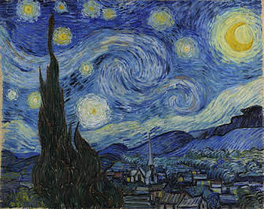

American Cryptids:
- Mothman
- A winged humanoid with glowing red eyes, often associated with disaster sightings in West Virginia.
- Champ
- A lake monster said to inhabit Lake Champlain, straddling New York and Vermont.
- Jersey Devil
- A winged, hooved creature with a goat-like head, said to roam the Pine Barrens of New Jersey.
- Bigfoot
- A large, ape-like creature said to inhabit forests, particularly in the Pacific Northwest.
- Chupacabra
- A blood-sucking creature, often described as reptilian, reported in various parts of the Americas.
- Thunderbird
- A giant bird often associated with Native American folklore, said to create thunder with its wings.
- Fouke Monster
- A large, ape-like creature reported in the swamps near Fouke, Arkansas.
- Dover Demon
- A small, goblin-like creature with bright orange eyes, sighted in Dover, Massachusetts.
- Loveland Frogman
- A humanoid amphibian reported in Loveland, Ohio, known for its webbed hands and feet.
- Flatwoods Monster
- A tall, humanoid creature with a spade-shaped head, spotted in Flatwoods, West Virginia.
Bigfoot
- Also known as Sasquatch
- Reported to be a large, hairy, muscular, bipedal ape-like creature
- Primarily sighted in the forests of the Pacific Northwest region of North America
- Many consider it to be a combination of folklore, misidentification, and hoax
Loch Ness Monster
- Often referred to as Nessie
- Reported to be a large creature living in Loch Ness in the Scottish Highlands
- Mostly considered to be a myth or legend
- First modern sighting occurred in 1933
Chupacabra
- Name comes from the Spanish words "chupar" (to suck) and "cabra" (goat)
- Reported sightings primarily in Puerto Rico and other parts of the Americas
- Described as a heavy creature, the size of a small bear, with a row of spines down its back
- First reported sighting was in 1995
